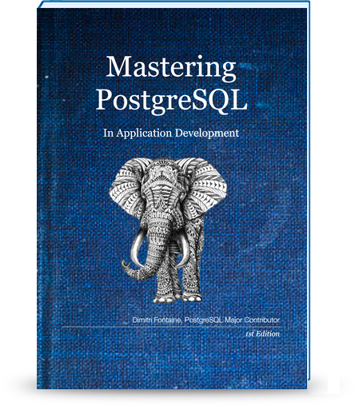

Kris Jenkins is a successful startup cofounder, turned freelance functional programmer, and open-source enthusiast. He mostly works building systems in Elm, Haskell & Clojure, improving the world one project at a time.
Mastering PostgreSQL in Application Development
The Book that teaches SQL to developers: learn to replace thousands of lines of code with simple queries!
Buy the Book Get a Free Sample!

Interviews
Mastering PostgreSQL in Application Development includes interviews from developers and SQL masters. PHP, Java, Python and Django get specific treatment in the book, which targets all application developers, whatever the language in use!
-

Kris Jenkins
Clojure's YeSQL
-
Yohann Gabory, python django’s expert, has published an “Advanced Django” book in France to share his deep knowledge of the publication system with Python developers. The book really is a reference on how to use django to build powerful applications.

Yohann Gabory
Django Avancé
-
Grégoire Hubert has been a web developer for about as long as we have web applications, and his favorite web tooling is found in the PHP ecosystem. He wrote http://www.pomm-project.org to help integrate PostgreSQL and PHP better. POMM grants developers with unlimited access to SQL and database features while proposing a high level API over low level drivers.

Grégoire Hubert
POMM Project
-
Markus Winand is the author of the very famous book “SQL Performance explained” and maintains both http://use-the-index-luke.com and http://modern-sql.com. Markus masters the SQL standard and is a wizard in how to use SQL to enable fast application delivery and solid run-time performances!

Markus Winand
Modern SQL
-
IT entrepreneur, founder of two software development companies (8Kdata, Wizzbill). Software architect and developer. Open source consultant and supporter. Ávaro Hernández Tortosa leads the https://www.torodb.com project, a MongoDB replica solution based on PostgreSQL!

Álvaro
ToroDB
About the Author

Hi! My name is Dimitri Fontaine and I have been using and contributing
to Open Source Software for the best of the last 20 years. I am a
PostgreSQL Major Contributor after having contributed Extensions and
Event Triggers, among other things.
I have been writing code almost daily for a very long time now, both in a
professional capacity and on my leisure time. I’ve also been a database
architect and a DBA on-call. As a developer I enjoy using SQL. As a database
architect, I like teaching advanced SQL techniques to my colleagues.
The Packages
Mastering PostgreSQL in Application Development comes in a choice of four packages. From the classic and to the point package The Book to the Enterprise Edtion, your needs are covered!
The Enterprise Edition
Everything you need for your whole team to master SQL, including a licence to share the electronic version of the book, the database, the 265 query files and a licence to share everything with up to 50 people, you included!
The Full Edition
The Full Edition comes with the electronic book package and an archive with a PostgreSQL dump file ready to be restored in your own instance, plus all the 265 queries as separate files for you to run and edit!
The Dead Tree Edition
A professionally printed paperback of 332 pages, with the same content. You still can have the PDF, ePub and MOBI, we know copy/paste is easier on those!
The Book
The real deal, 328 pages of advanced SQL teaching, just for you. You get the PDF version, the ePub version, and the MOBI version too.
You get all the content, with instructions to download and process the Open Data referenced in …
Our best sell is The Full Edition, be sure to check it out!
Still not sure what package is best for you? See the full details below…
The Dead Tree Edition
A professionally printed paperback of 332 pages, with the same content. You still can have the PDF, ePub and MOBI, we know copy/paste is easier on those!
$49

© 2017, Dimitri Fontaine
Template by Bootstrapious. Ported to Hugo by DevCows